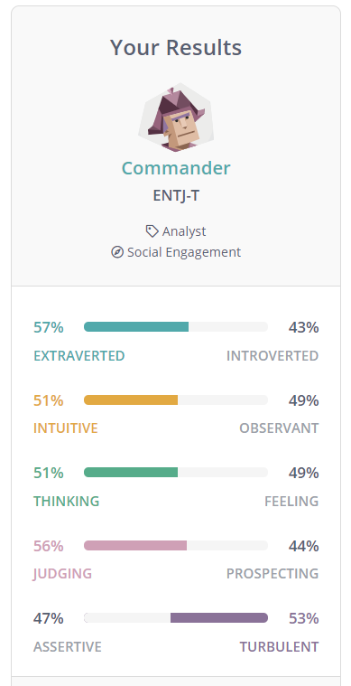
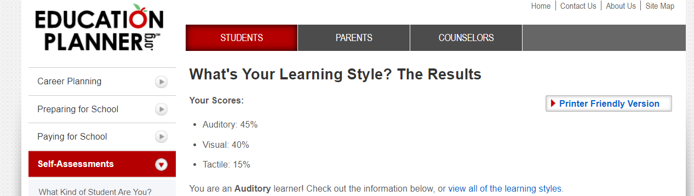
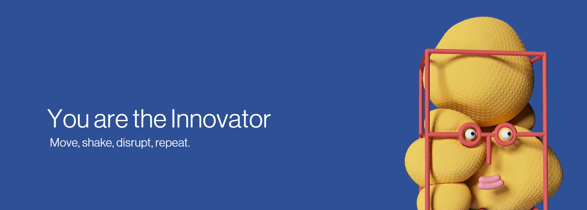

Personality Profiles

Commander Strengths: Efficient, Energetic, Self-Confident, Strong-Willed, Strategic Thinkers, Charismatic and Inspiring
Commander Weaknesses: Stubborn and Dominant, Intolerant, Impatient, Arrogant, Poor Handling of Emotions, Cold and Ruthless
According to https://www.16personalities.com/, my personality type is ENTJ-T. People with ENTJ-T personality have clear thinking, can look at things objectively, and pursue goals with a unique vision. I believe this will be of great help to my future career. In addition, people with ENTJ-T personality type tend to have relatively excellent planning and leadership skills. I believe that combined with my own efforts, I can take on some planning tasks in the future work ProjectIdea.
People with ENTJ-T personality need to pay attention to communicating with other people to ensure smooth cooperation at work. This means that I need to learn to be more proactive in talking with other people, listen to their suggestions and express my ideas.
People with ENTJ-T personality adhere to very high standards, but many factors that set this tone are feedback from their surroundings, that is, criticism from their managers. An objective and rational statement of what is right and what can be done better is very helpful for people with ENTJ-T personality. This shows that I should humbly listen to the suggestions and criticisms of others in my future work, insist on demanding myself with high standards, and make continuous progress.

According to http://www.educationplanner.org/, I am an auditory learner and can learn by listening and listening. This means that I am more accustomed to storing information by listening, and this result is objective. I often learn by reading aloud because I think learning by listening makes me remember things more easily than by reading.
This test gives me inspiration. In my future studies, I will try more to improve my learning efficiency by listening.

Characteristic: Move, Shake, Disrupt, Repeat
According to https://mycreativetype.com/, I have the potential to provide new ideas and innovative solutions. The result mentions that innovators see everything through the lens of possibility, progress, problems and solutions, which makes many things possible. I strongly believe that using the intelligence and creativity to solve problems and dream of new and improved ways of doing things will play an important role in my future study and work.
The test results also show that my ideal collaborator is the maker, and this result is reasonable. The innovator can provide the maker with the ideas they need most, and the maker can turn these ideas into reality through manufacturing. In the future cooperation, I would like to learn to make good use of my talents and provide ideas and creativity to my collaborators, and make better contributions to the cooperation.
Project Idea
I am very eager for the field of game design and development, so I hope I can devote myself to game design and development in the following studies. I plan to design a game based on smartphones because the market potential of mobile games is huge and the development speed is very fast. According to Iron Source (2020), mobile media is sweeping our lives. The daily use time of mobile phone users increased from 152 minutes in 2014 to 215 minutes in 2018, and is expected to increase to 234 minutes by 2021. As more and more Internet users use mobile phones, this trend can also be seen on a global scale. In 2019, the North American mobile game content market was valued at 21.9 billion U.S. dollars and is expected to reach 29.1 billion U.S. dollars by 2022. Mobile devices account for a large share of the entire gaming software market.
Obviously, the weight of mobile games in the entire game industry is gradually increasing, and more and more people are beginning to pay attention to the design and development of mobile games. In this context, participating in the design and development of a mobile game is necessary and very beneficial for us who are studying computer-related majors. Participating in the design and development of mobile games is not only to learn the knowledge of programming and graphics processing, but also to study the reasons for the rapid development of mobile games and the huge scale of the industry. Nowadays, the electronics industry is developing very rapidly. If we in the industry do not understand and learn new development trends and industries in time, we will soon fall behind.
In the development of this mobile game, although there are still many uncertain factors, the type and design concept of the game are determined. First of all, according to the characteristics of mobile games and their user groups, games are set to be casual and do not require high-difficulty and high-intensity operations. The main reason for this is that mobile devices, such as smartphones and tablet computers, usually do not have keyboards and mice like computers or laptops for various human-computer interaction methods. Accordingly, in order to ensure the interactivity of the game, I plan to add some puzzle solving and selection content to the game content.
Secondly, this mobile game plan is designed to be fast-paced, pauseable, and does not need to be online for a long time. The user group of mobile games cannot guarantee that they will often spend half an hour or more at a time to experience the game like console gamers. Therefore, games that are fast-paced, can be paused, and do not need to be online for a long time are more suitable for those who use fragmented time to experience the game. Mobile gamers of mobile games. Correspondingly, in order to ensure the activeness of game players, the game will add a mechanism for regularly signing in and issuing rewards, so that players can be dynamically active in the game.
Finally, this game will feature an anti-addiction mechanism. Although most mobile game users do not spend too much time on the game, it is still inevitable that some players will spend ten hours or more on the game every day. This not only brings a heavy burden to the health of these players, but also It is not conducive to the healthy development of the game. Therefore, the game adds an anti-addiction mechanism to guide players to experience the game reasonably and happily.
In my plan, Unity and other programming tools will be used in the development of this mobile game. Python will be the preferred programming language, and the hardware will be my laptop. The design and development of mobile games will use the corresponding programming knowledge and mobile terminal application development experience. In the past, I have not tried to complete the development of mobile applications independently, so I may need to consult more materials and tutorials to assist the development of the game. In addition, learning from teachers and classmates about mobile game design and development can also have a positive effect. At present, the feasibility of this project is high, and I am confident about it.
If this mobile game is successfully developed, it will mean that I have taken a step forward in the field of game design and development. Although this game may not be perfect, I will take it as a new starting point, continue to broaden my horizons and improve my level.